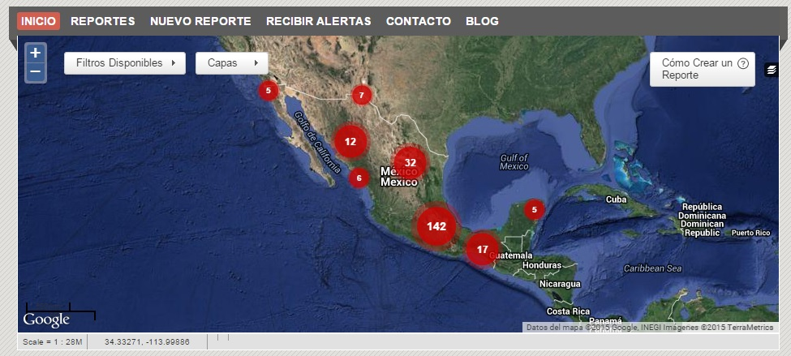

Case Studies
Mexico
Press Freedom Index Ranking: 148/180
Mexico’s track record on journalist freedom leaves much to be desired. Highlighted by slews of attacks on the press, by both the government and powerful crime organizations, the practice of journalism in the country is becoming increasingly dangerous. Jorge Luis Sierra (creator of Periodistas in Riesgo and Mi Panama Transparente) has dedicated a Knight Fellowship to combating press persecution, which is on the rise. A recent report has found that attacks against journalists have increased 80% under the current president, with an average of one attack every 26 hours.

Mexico’s journalists are online, and could benefit significantly from a greater access to media outlets – overseas or even within the country – to publish, and better training or resources on how to encrypt data, conduct safe investigative journalism and solidify alliances with others interested in stories on the ground.
Brazil
Press Freedom Index Ranking: 99/180
Despite Brazil’s increasing prominence worldwide, it is a deadly place for journalists, faring only marginally better than Pakistan and Russia. Although Brazil is booming online – the country has an impressive 53% internet penetration – the country is failing at maximizing the potential to use the medium to promote unbiased and uncensored journalism. Blocking and article takedowns are common in Brazil, and an incestuous relationship between government, advertising and media mean that journalists and under constant fear of litigation.
A report by Reporters Without Borders outlined several cases of political intervention in media activity, including the arrest of Google Brazil president Fabio Coelho for lagging in removing a video that insulted a candidate.
Brazil is rapidly becoming one of the most connected countries in the world, with an impressive 53% of its population online. A 2012 Public Information Act is also a promising move towards a freer press. At the same time, Brazil's independent journalists could benefit significantly from faciliating contact with similar countries, such as its neighbour Argentina, which is grappling with somewhat similar problems and also doing exceptionally well in its development of digital media.
Syria
Press Freedom Index Ranking: 177/180
Given recent events, there are few places that may intimidate a journalist more than Syria. A protracted and bloody civil war combined with the barbaric executions of reporters James Foley, Steven Sotloff and Kenji Goto have made international headlines and drawn attention to the plight of freelance reporters worldwide.
An increase in the participation of citizen journalists who have access to dangerous or inaccessible areas has made informal journalism integral in covering the Syrian conflict. Index on Censorship magazine collaborated with Syria Tracker – a platform monitoring press activity in Syria – and found that apart from the city of Homs, the majority of the reports were coming from citizen journalists (with the caveat that only 6% of data is considered well sourced enough for publication, though the low percentage might be attributed to the chaotic nature of war rather than sheer unreliability.)
Much like Kelly Niknejad's 'The Tehran Bureau' before it, two of the go-to sources for information on the Syrian conflict are based in homes in the United Kingdom. Contacts on the ground keep in touch with two bloggers who have greater freedom to sort through, verify and publicize stories. Similarly, Women Under Siege has been using citizen reports to map incidents of sexual violence in the country, a highly disturbing but important project that uses new tools in journalism to visualize a difficult story to report. (Given the limited resources of the bloggers themselves, however, the citizen journalists are left without many returns.)
Egypt
Press Freedom Index Ranking: 158/180
Egypt stands as an example of the potential of harnessing the power of online networks. The Egyptian revolution exploded online, with many using digital media to unite citizen journalists with mainstream media outlets.
Nonetheless, Egypt remains one of the world’s top jailers of journalists. The case of three Al-Jazeera journalists imprisoned under dubious charges caught the world’s attention, eliciting comment even from Barack Obama.
The international activism sparked by the jailing of the Al-Jazeera journalists, with the popularity of the hashtag #freeAlJazeera was heartening in that it demonstrated a clear public interest in protecting members of the press, and decrying their persecution. What the Al-Jazeera staff had, of course, was visibility and friends in high places, luxuries often denied those doing independent, but equally important work.
The threat of a formidable press is enough in Egypt for government intervention. The Guardian reported on journalist Yehia Genham, who had to flee the country after attempting to set up a journalism school after being given a substantial grant by the US state department.
<--
Bangladesh
Press Freedom Index Ranking: 146/180
Bangladesh's media is shifting, with much owned by private businesses. This isn't entirely a good thing, as Tithe Farhna writes in The Diplomat, "no matter which TV channel one watches, it is invariably the same programming format comprising a mix of low-quality drama serials, inane talk shows, and partisan, inaccurate news presentations."
Independent or controversial media struggle to operate in a country that is openly hostile towards secular views or criticisms of the government. Recently, three bloggers were murdered - the most recent hacked to death - for their views.
Main media outlets are tightly restricted, subject to the country's Information, Communication and Technology Act of 2006, which allows the government ample room for condemning material as sedition. Mahmurdur Rahman, editor of the main opposition newspaper Amar Desh, was arrested last year and circulation of the paper ceased. (Though it is important to note that the newspaper was highly controversial in nature and did print material that contributed to religious tension in the country, even his critics agree that his arrest was not spurred by this, but by his open stance against the government). Joe I hate this guy should I include this? He's not a fellow you generally root for.
Bangladesh is not a wired country - given the economic circumstances of the state and poor infrastructure, internet penetration hovers around a low 6%. Yet, as the urban centre is the seat of power, journalism and protection of journalists will only increase in importance as internet usage expands and media outlets become monopolized by wealthy companies.
A usage of a network cannot solve the myriad problems in such a desperate situation, but could easily facilitate better or safer journalism practices in a country with few examples to learn from, and a small internet community who have recently entered the digital age. Would those bloggers, for example, have been better knowing how to make their work anonymous and untraceable? Or if they'd been better connected internationally and better protected just out of fear of unwanted international attention? These are, of course, conjecture, but not unreasonable.